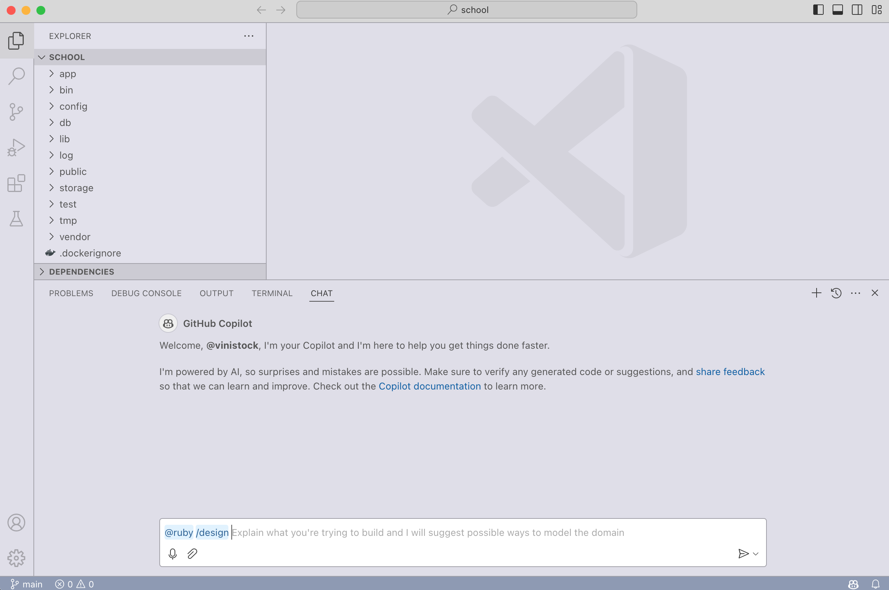

Ruby LSP
The Ruby LSP is an implementation of the language server protocol for Ruby, used to improve rich features in editors. It is a part of a wider goal to provide a state-of-the-art experience to Ruby developers using modern standards for cross-editor features, documentation and debugging.
Want to discuss Ruby developer experience? Consider joining the public Ruby DX Slack workspace.
Table of Contents
- Usage
- Add-ons
- General features
- Hover
- Go-to-Definition
- Completion
- Signature Help
- Code Lens for tests
- Document symbol
- Workspace symbol
- Document link
- Document highlight
- Folding range
- Semantic highlighting
- Diagnostics
- Formatting
- Code actions
- Inlay hints
- On type formatting
- Selection range
- Show syntax tree
- ERB support
- Guessed types
- Rename symbol
- Find references
- VS Code only features
- Experimental Features
- Configuration
- Additional Resources
Usage
With VS Code
If using VS Code, all you have to do is install the Ruby LSP extension to get the extra features in the editor. Do not install the ruby-lsp gem manually.
For more information on using and configuring the extension, see the extension page.
With other editors
See editors for community instructions on setting up the Ruby LSP, which currently includes Emacs, Neovim, Sublime Text, and Zed.
The gem can be installed by doing
gem install ruby-lsp
and the language server can be launched running ruby-lsp (without bundle exec in order to properly hook into your project’s dependencies).
Composed Ruby LSP bundle
The Ruby LSP executable generates a composed bundle with the goal of not requiring users to add the ruby-lsp gem to their Gemfiles, and at the same time being able to hook into project dependencies. Learn more.
Dependency Compatibility
The Ruby LSP can provide an enhanced experience if RuboCop is present in the project. While using it is optional, if you do choose to include RuboCop, make sure it’s version 1.4.0 or higher.
Add-ons
The Ruby LSP provides an add-on system that allows other gems to enhance the base functionality with more editor features. This is the mechanism that powers add-ons like
Additionally, some tools may include a Ruby LSP add-on directly, like
Other community driven add-ons can be found:
- by searching rubygems for the
ruby-lspprefix - in the community driven list of awesome-ruby-lsp
For instructions on how to create add-ons, see the add-ons documentation.
General features
Note that none of the features in this section are specific to Ruby; they are general to all programming languages. Becoming familiar with them will enhance your ability to use the editor effectively.
If you’re using VS Code, we recommend their excellent guides and documentation to learn more about the editor’s philosophy and feature set.
Hover
The hover feature displays comments or documentation for the target constant or method when the cursor hovers over them.
In VS Code, if you hover while pressing Command, it will also send a definition request to locate the possible target sources. And it will display the target’s source code if only one source is located (e.g., the class is not reopened in multiple places).
Go-to-Definition
Go-to-definition allows users to navigate to the target constant or method’s definition, whether they’re defined in your project or its dependencies.
In VS Code this feature can be triggered by one of the following methods:
Right clickon the target, and then selectGo to Definition- Placing the cursor on the target, and then hit
F12 Command + clickthe target
With One Definition:
Users are taken directly to the source.
With Multiple Definitions:
Users see a dropdown with all the sources, along with a preview window on the side.
Completion
The completion feature provides users with completion candidates when the text they type matches certain indexed components. This helps speed up coding by reducing the need to type out full method names or constants. It also allows developers to discover constants or methods that are available to them.
Completion for method calls can only be provided when the type of the receiver is known. For example, when typing foo. it’s only possible to show method completion candidates if know the type of foo. Since the Ruby LSP does not require users to adopt a type system, completion for methods ends up being available only when types can be determined even without annotations (e.g.: methods invoked on literals, constants, direct instantiations of objects using new).
If you would like to have more accurate completion, consider adopting a type system.
Signature Help
Signature help often appears right after users finish typing a method, providing hints about the method’s parameters. This feature is invaluable for understanding the expected arguments and improving code accuracy.
Code Lens
Code lenses are buttons that are added automatically depending on the context of the code. The Ruby LSP supports code lenses for unit tests, allowing you to run tests using VS Code’s test explorer, run the tests in the terminal or launch the debugger.
The code lens request requires specific commands to be implemented in the editor in order to work. For VS Code, this is included with the Ruby LSP extension. If you are using a different editor, please check the editor’s documentation on how to define the required commands.
Document symbol
Document symbol allows users to fuzzy search declarations inside the current file. It is also used to populate the breadcrumbs and the outline.
Workspace symbol
Workspace symbol is the project-wide version of document symbol. It allows users to fuzzy search any declaration in the entire project.
Document link
Document link makes magic source links clickable. This is used to connect two declarations for convenience. Note that the links are only processed if they are immediately above a declaration and not anywhere in the code.
Document highlight
Document highlight reveals occurrences and declarations of the entity under the cursor.
Folding range
Folding range allows users to fold code at relevant ranges of the source.
Semantic highlighting
The semantic highlighting removes ambiguity from the language to achieve consistent editor highlighting. For example, with TextMate grammars alone, local variables and method invocations with no receivers or parenthesis can be confused, often resulting in incorrect highlighting.
The Ruby LSP’s strategy for semantic highlighting is to return as few tokens as possible to ensure accurate highlighting. Processing a large number of tokens is expensive for editors and may result in lag.
Semantic highlighting simply informs the editor of what type of tokens exist in a file. For example, the Ruby LSP tells the editor “this is a local variable” or “this is a method call”. However, this does not mean that themes necessarily make use of that information or that they support semantic highlighting.
The Ruby extensions pack extension includes the Spinel theme, which is tailored for use with the Ruby language by fully leveraging all of Ruby LSP’s semantic information.
If you wish to add better Ruby support to other themes, see the semantic highlighting for themes docs.
Diagnostics
Diagnostics are linting, error, warning and any other type of information that gets surfaced based on the current state of the code. The Ruby LSP has native support for syntax errors and also supports showing linting errors.
You can configure which linters to use as long as they have integrations for the Ruby LSP. Check the available configurations.
Formatting
Formatting allows documents to be formatted automatically on save or manually if the editor supports it.
Code actions
Quick fixes
The Ruby LSP supports fixing violations through quick fixes.
Refactors
The Ruby LSP supports some code refactorings, like extract to variable, extract to method and switch block style.
Inlay hints
Inlay hints display implicit information explicitly to the user. The goal is to make implicit behavior more discoverable and visible.
By default, only implicit rescue hints are displayed. VS Code users can use the following settings to customize inlay hint behavior:
{
// Enable all hints
"rubyLsp.featuresConfiguration.inlayHint.enableAll": true,
// Enable implicit rescue (defaults to true)
"rubyLsp.featuresConfiguration.inlayHint.implicitRescue": true,
// Enable implicit hash values (omitted hash values)
"rubyLsp.featuresConfiguration.inlayHint.implicitHashValue": true
}
To configure other editors, see the initialization options.
On type formatting
On type formatting applies changes to the code as the user is typing. For example, the Ruby LSP auto completes the end tokens when breaking lines.
In VS Code, format on type is disabled by default. You can enable it with "editor.formatOnType": true
Range formatting
Range formatting allows users to format a selection in the editor, without formatting the entire file. It is also the feature that enables format on paste to work.
In VS Code, format on paste is disabled by default. You can enable it with "editor.formatOnPaste": true
Currently, only the Syntax Tree formatter has support for partially formatting a file. Supporting range formatting for RuboCop or Standard requires new APIs to be exposed so that the Ruby LSP can inform the formatter of the base indentation at the place of the selection. Additionally, the formatter can only apply corrections that make sense for the portion of the document.
Selection range
Selection range (or smart ranges) expands or shrinks a selection based on the code’s constructs. In VS Code, this can be triggered with CTRL + SHIFT + LEFT/RIGHT ARROW to expand/shrink, respectively.
Show syntax tree
Show syntax tree displays the Abstract Syntax Tree (AST) for the current Ruby document. This custom feature can either show the AST for the entire document or for a selection.
This feature is not a part of the language server specification. It is a custom feature, which is implemented in the Ruby LSP’s VS Code extension. Other editors can implement a similar approach to achieve the same functionality
ERB support
The Ruby LSP can process ERB files and handle both the embedded Ruby and the host language portions of the file. For the embedded Ruby part, the Ruby LSP responds with all Ruby features you would normally see in regular Ruby files. For features for the host language, like HTML, the Ruby LSP delegates the requests to the language service registered to handle that file type.
Request delegation has not yet been formalized as part of the LSP specification. Therefore, this requires custom code on the client (editor) side. The Ruby LSP VS Code extension ships with that custom implementation, but other editors will need to implement the same to support these features
The delegation of certain JavaScript features works partially. For example, completion inside an onclick attribute will sometimes display incorrect candidates. We believe this might be a limitation of request delegation in general and we’ve opened a discussion with VS Code to better understand it.
Guessed types
Guessed types is a feature where the Ruby LSP attempts to identify the type of a receiver based on its identifier. For example:
# The receiver identifier here is `user` and so the Ruby LSP will assign to it the `User` type if that class exists
user.name
# Similarly, the receiver identifier here is `post` and so the LSP searches for the `Post` class
@post.like!
The goal of this experiment is to understand if we can get better accuracy for the code that you already have. The hypothesis is that a reasonable amount of code already uses patterns like the ones in the example and, in those cases, we can achieve nicer results.
However, identifiers are not the ideal medium for proper type annotations. It would not be possible to express anything complex, such as unions, intersections or generics. Additionally, it is very trivial to fool the type guessing by simply naming a variable with a type name that doesn’t match its actual type.
pathname = something_that_returns_an_integer
# This will show methods available in `Pathname`, despite the variable being an Integer
pathname.a
We do not recommend renaming methods, instance variables or local variables for the sole purpose of getting better accuracy - readability should always come first. For example:
# It would not be a good idea to name every string "string" for the sake of getting better accuracy.
# Using descriptive names will outweigh the benefits of the more accurate editor experience
# don't
string = something.other_thing
# do
title = something.other_thing
name = foo
That said, this feature can also be used for quickly exploring methods available in classes. Simply type the lower case name of the class and completion can show the methods available.
# Any class name as an identifier
pathname.a
integer.a
file.a
To guess types, the Ruby LSP will first try to resolve a constant based on the receiver identifier and current nesting. If that does not identify any valid types, then it will fallback to matching based on the first match for the unqualified type name. For example:
module Admin
class User
end
# Will match to `Admin::User` because the `user` reference is inside the `Admin` namespace
user.a
end
module Blog
class User
end
# Will match to `Blog::User` because the `user` reference is inside the `Blog` namespace
user.a
end
# Will match to the first class that has the unqualified name of `User`. This may return `Admin::User` or `Blog::User`
# randomly
user.a
Rename symbol
Rename allows developers to rename all occurrences of the entity under the cursor across the entire project. In VS Code renaming can be triggered by right clicking the entity to rename or by pressing F2 on it. You can also preview the edits that will be applied by pressing CTRL/CMD + Enter after typing the desired new name.
Rename is currently only supported for constants, module names and class names.
Find references
The find references request allows users to both see a list of references or jump to reference locations. Note that only constants are currently supported, but support for methods, instance variables and local variables is planned.
VS Code features
The following features are all custom made for VS Code.
Dependencies view
The Ruby LSP contributes a custom dependencies view panel that allows users to navigate the dependencies of their projects.
Rails generator integrations
The Ruby LSP integrates with Rails generators, which can be invoked through the UI. All generated files are automatically opened and formatted using the project’s formatting configurations.
Debug client
The Ruby LSP ships with a client for the debug gem. The client allows functionality such as code lens, but also enables launch configurations for starting a process with the visual debugger or attaching to an existing server.
Version manager integrations
When working on many projects with different Ruby versions, the Ruby LSP needs to know which Ruby version is being used and where gems are installed in order to support automatic dependency detection and indexing.
We support custom built integrations with the following version managers for automatic version switching with no need for any user actions:
Additionally, we provide the following escape hatches if the custom integrations are not enough:
- custom: define a custom shell script to activate the Ruby environment on any project
- none: do nothing and rely on the environment inherited by VS Code
Most version managers have some shell component to them in order to mutate the user’s environment in a terminal and point to the correct Ruby version. For this reason, the VS Code extension must invoke the user’s shell from the NodeJS process where it is running - otherwise the version manager wouldn’t be available for the integration.
This can sometimes lead to Ruby environment activation problems. For example, certain shell plugins expect variables set by terminals to be present and fail if they aren’t. The NodeJS process running the extension will not have set these variables and therefore will be likely to fail.
Finding a general solution to this problem is not trivial due to the number of different combinations of operating systems, shells, plugins and version managers. On top of those, people configure their shell environments differently. For example, some users may source their version managers in ~/.zshrc while others will do it in ~/.zshenv or ~/.zprofile.
If experiencing issues, keep in mind that shell configurations could be interfering, check troubleshooting and, if none of the listed solutions work, please report an issue.
Experimental Features
Ruby LSP also provides experimental features that are not enabled by default. If you have feedback about these features, you can let us know in the DX Slack or by creating an issue.
Ancestors Hierarchy Request
The ancestors hierarchy request feature aims to provide a better understanding of the inheritance hierarchy within your Ruby code. This feature helps developers trace the lineage of their classes and modules, making it easier to:
- Visualize the inheritance hierarchy of classes and modules.
- Quickly navigate through the inheritance chain.
Why Is It Experimental?
This feature is supported by the Type Hierarchy Supertypes LSP request. During implementation, we encountered some ambiguities when applying it to Ruby. For example:
- Should the list include only classes (pure inheritance chain), or should it include modules too (current behavior)?
- How should the inheritance chain of singleton classes be triggered and displayed?
- If a class or module is reopened multiple times, it will appear multiple times in the list. In real-world applications, this can make the list very long.
We created an issue to seek clarification from the LSP maintainers. We will adjust this feature’s design and behavior based on their response and your feedback.
Copilot chat participant
The Ruby LSP includes a Copilot chat participant that comes with built-in knowledge of Ruby and Rails commands, helping you build these commands efficiently.

Configuration
Configuring code indexing
By default, the Ruby LSP indexes all Ruby files defined in the current project and all of its dependencies, including default gems, except for
- Gems that only appear under the
:developmentgroup - All Ruby files under
test/**/*.rb
This behavior can be overridden and tuned. Learn how to configure it for VS Code.
Note that indexing-dependent behavior, such as definition, hover, completion or workspace symbol will be impacted by the configuration changes.
The older approach of using a .index.yml file has been deprecated and will be removed in a future release.
# Exclude files based on a given pattern. Often used to exclude test files or fixtures
excluded_patterns:
- "**/spec/**/*.rb"
# Include files based on a given pattern. Can be used to index Ruby files that use different extensions
included_patterns:
- "**/bin/*"
# Exclude gems by name. If a gem is never referenced in the project's code and is only used as a tool, excluding it will
# speed up indexing and reduce the amount of results in features like definition or completion
excluded_gems:
- rubocop
- pathname
# Include gems by name. Normally used to include development gems that are excluded by default
included_gems:
- prism
Additional Resources
- RubyConf 2022: Improving the development experience with language servers (Vinicius Stock)
- Remote Ruby: Ruby Language Server with Vinicius Stock
- RubyKaigi 2023: Code indexing - How language servers understand our code (Vinicius Stock)